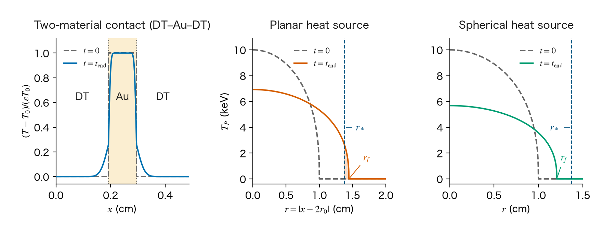
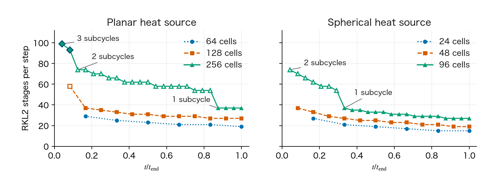
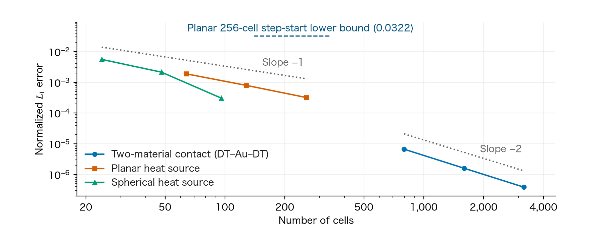

1D heat-conduction verification against analytic solutions reference
Abstract
Three standard problems with closed-form analytic solutions verify the one-dimensional electron heat-conduction solver (second-order Runge–Kutta–Legendre super-time-stepping with per-stage coefficient evaluation and width-weighted harmonic Kirchhoff-secant face conductivity). In the linearized two-material contact (DT–Au–DT), the solver attains second-order spatial convergence across a material interface with a 4:1 cell-width ratio, with observed orders of 2.06 and 2.05. Planar and spherical Barenblatt–Pattle instantaneous heat sources test nonlinear heat-front propagation at time steps up to 800 times the explicit stability limit; all three problems pass. The planar heat source shows observed orders of 1.24 and 1.31, and its fine-mesh error of 3.21 × 10−4 lies roughly two orders of magnitude below the 0.0322 theoretical lower bound of step-start coefficient freezing. The spherical heat source shows observed orders of 1.38 and 2.81, passing the 0.75 threshold, but the wide spread between the two values indicates that the three-mesh sequence has not yet entered the asymptotic regime.
Introduction
By default, 1D electron heat conduction discretizes the local Spitzer–Härm (SH) conductivity and harmonic flux limiter with a conservative finite-volume operator and advances it in time with second-order Runge–Kutta–Legendre (RKL2) super-time-stepping (STS) [1, pp. 600–602]. Across a material interface separating cells of unequal width, flux continuity relies on the width-weighted harmonic face prefactor and the Kirchhoff secant [2, p. 27, Eqs. (28)–(29)]. On a steep nonlinear heat front advancing several cells per step, whether conductivities and flux limiters are frozen at step entry or re-evaluated at each stage directly governs how far the front can travel [10, p. 111, Eqs. (29)–(31); 14, p. 46, §8.7].
Three tests isolate these two requirements: a linearized two-material contact problem and planar and spherical Barenblatt–Pattle instantaneous heat sources [5, p. 408, Eqs. (3)–(6)]. The two-material contact tests second-order accuracy across a DT–Au interface with a 4:1 cell-width jump. The planar and spherical heat sources advance a finite-speed \(T^{5/2}\) thermal wave at large explicit stability ratios; in particular, the planar source separates per-stage coefficient evaluation from step-start coefficient freezing through a rigorous error lower bound.
Setup
All three problems use a one-temperature (1T) ideal gas (adiabatic index \(\gamma=5/3\)) with fixed ionization \(\bar Z\), disable hydrodynamics, radiation transport, laser deposition, and nuclear burn, and run electron conduction alone through the normal 1D driver. The Spitzer–Härm conductivity uses TENRYU's standard form including the Epperlein–Short \(Z\)-dependent correction \(\xi(Z)\) [3, p. 977; 4, p. 3092]. The volumetric heat capacity of the 1T ideal gas is \(\rho c_v=\rho(1+\bar Z)k_B/[(\gamma-1)Am_p]\), where \(\rho\) is mass density, \(c_v\) is specific heat, \(A\) is atomic mass number, \(m_p\) = 1.6726219 × 10−24 g is the proton mass, and \(k_B\) = 1.6022 × 10−12 erg/eV converts eV to erg.
| Setting | Value |
|---|---|
| Temperature model and EOS | One-temperature (1T) ideal gas (\(\gamma=5/3\)) with fixed ionization (zbar.model="fixed"); hydrodynamics, radiation, laser, and burn disabled |
| Electron conduction solver | Default 1D STS (solver="sts", RKL2 with per-stage coefficients), face_kappa_policy="kirchhoff_same_material", f_lim=0.06 |
| STS control keys | cfl_cond=0.25, sts_max_stages=40, sts_subcycle_eta=0.9, sts_bound_margin=0.1, sts_bound_retries_max=4 |
| Boundaries and stepping | Zero heat flux (adiabatic) at both ends; normal 1D driver with constant target time step to \(t_{\rm end}\) |
The two-material contact places a warm gold (Au) slab at \(T_0(1+\varepsilon)\) (\(\varepsilon\) = 10−6) between two deuterium–tritium (DT) slabs at \(T_0\) = 100 eV. Cell widths satisfy \(w_{\rm DT}/w_{\rm Au}=4\) to match the density ratio \(\rho_{\rm Au}/\rho_{\rm DT}=4\) (equal cell masses), isolating the width-weighted harmonic average across the conductivity ratio \(\kappa_{\rm DT}/\kappa_{\rm Au}\) ≈ 10.80. With coarse DT width \(h_0\) = 2 × 10−3 cm, the DT diffusion length is \(\ell_{\rm DT}=16h_0\) = 0.032 cm, fixing the end time \(t_{\rm end}=\ell_{\rm DT}^2/(4\alpha_{\rm DT})\) = 5.72818 × 10−7 s and the Au diffusion length \(\ell_{\rm Au}\) = 8.5597 × 10−3 cm. Each outer DT slab spans 0.192 cm (6 \(\ell_{\rm DT}\), 96·2k cells) and the central Au slab spans 0.103 cm (206·2k cells; total domain 0.487 cm), keeping outer boundary tails at \(\operatorname{erfc}(6)\) ≈ 2 × 10−17, below double-precision round-off. Grids run at levels \(k\) = 1, 2, 3 with diffusive refinement \(\Delta t_k=t_{\rm end}/(16\cdot 4^k)\) (\(\Delta t\propto h^2\)).
The planar and spherical Barenblatt–Pattle heat sources use high-density 1T DT (\(\rho\) = 107 g/cm3, \(A\) = 2.5, \(\bar Z\) = 1, electron density \(n_e\) = 2.3915 × 1030 cm−3). At this density the Coulomb logarithm is pinned at its floor \(\ln\Lambda\) = 2 for all \(T\) ≤ 4.3 × 105 eV, reducing conductivity to the exact power law \(\kappa=\kappa_0 T^{5/2}\) with \(\kappa_0\) = 1.53 × 109 erg/(s cm eV7/2). For initial front radius \(r_0\) = 1 cm and peak temperature \(T_{c0}\) = 104 eV, the reference diffusivity is \(D_0=\kappa_0 T_{c0}^{5/2}/(\rho c_v)\) = 1.33104 cm2/s. The initial discrete state takes the analytic cell averages floored at \(T_{\rm floor}\) = 10−3 eV, and \(c_{v,e}\) is pre-filled with the 1T ideal-gas specific heat so step 1 uses the full 1T heat capacity. Grids run at levels \(k\) = 0, 1, 2 with uniform cell width \(h_k=r_0/(16\cdot 2^k)\) and linear time-step refinement \(\Delta t_k\propto h_k\), which keeps the initial instantaneous front-CFL number \(C_f=\dot r_f(0)\Delta t_k/h_k\) constant across meshes [10, p. 111, Eqs. (29)–(31)].
| Problem | Geometry and domain | Material, density, properties | Time scale and final state | Refinement and grids (cells / steps) |
|---|---|---|---|---|
| Two-material contact (DT–Au–DT) | Planar, [0, 0.487] cm (contacts at \(x_L\) = 0.192 cm, \(x_R\) = 0.295 cm, \(w_{\rm DT}/w_{\rm Au}=4\)) | DT: \(A\) = 2.5, \(\bar Z\) = 1, \(\rho\) = 0.25 g/cm3, \(\ln\Lambda\) = 2.3826, \(\kappa_{\rm DT}\) = 1.2843 × 1014 erg/(s cm eV), \(\alpha_{\rm DT}\) = 446.91 cm2/s. Au: \(A\) = 197, \(\bar Z\) = 50, \(\rho\) = 1.0 g/cm3, \(\ln\Lambda\) = 2.0, \(\kappa_{\rm Au}\) = 1.1895 × 1013 erg/(s cm eV), \(\alpha_{\rm Au}\) = 31.977 cm2/s |
\(T_0\) = 100 eV, \(\varepsilon\) = 10−6, \(t_{\rm end}\) = 5.72818 × 10−7 s, interface fraction \(\theta\) = 0.25719 | \(\Delta t\propto h^2\) (\(k\) = 1, 2, 3) 796 / 64 1,592 / 256 3,184 / 1,024 |
| Planar heat source | Planar, [0, 4] cm (centered at \(x=2r_0\) = 2 cm, \(r=|x-2r_0|\)) | DT: \(A\) = 2.5, \(\bar Z\) = 1, \(\rho\) = 107 g/cm3, \(\ln\Lambda\) = 2, \(\kappa_0\) = 1.53 × 109 erg/(s cm eV7/2), \(\rho c_v\) = 1.1495 × 1019 erg/(cm3 eV) | \(t_0\) = 0.208692 s, \(t_{\rm end}\) = (135/32)\(t_0\) = 0.880420 s, \(r_f\) = 1.44364 cm, \(T_c\) = 6926.93 eV, initial \(C_f\) = 2.5 | \(\Delta t\propto h\) (\(k\) = 0, 1, 2) 64 / 6 128 / 12 256 / 24 |
| Spherical heat source | Spherical, [0, 1.5] cm (centered at \(r\) = 0) | Same high-density DT as the planar heat source (\(\ln\Lambda\) = 2, \(D_0\) = 1.33104 cm2/s) | \(t_0\) = 0.0988542 s, \(t_{\rm end}\) = 5\(t_0\) = 0.494271 s, \(r_f\) = 1.20757 cm, \(T_c\) = 5678.95 eV, initial \(C_f\) = 1.404 | \(\Delta t\propto h\) (\(k\) = 0, 1, 2) 24 / 6 48 / 12 96 / 24 |

Analytic solutions
Two-material contact (DT–Au–DT)
For perturbation amplitude \(\varepsilon\) = 10−6, the conductivity \(\kappa_m\) and thermal diffusivity \(\alpha_m=\kappa_m/(\rho c_v)_m\) of each material are constant to order \(\varepsilon\) around \(T_0\) = 100 eV. Enforcing continuity of temperature and heat flux at contacts \(x_L\) and \(x_R\) gives the analytic solution \(T_{\rm ex}(x,t)\):
$$ \begin{aligned} \theta &= \frac{\kappa_{\rm Au}\sqrt{\alpha_{\rm DT}}}{\kappa_{\rm Au}\sqrt{\alpha_{\rm DT}}+\kappa_{\rm DT}\sqrt{\alpha_{\rm Au}}}, \qquad \ell_{\rm DT}=2\sqrt{\alpha_{\rm DT}t}, \qquad \ell_{\rm Au}=2\sqrt{\alpha_{\rm Au}t},\\ \frac{T_{\rm ex}(x,t)-T_0}{\varepsilon T_0} &= \begin{cases} \theta\,\operatorname{erfc}\!\left(\dfrac{x_L-x}{\ell_{\rm DT}}\right) & (x\le x_L),\\[8pt] 1-(1-\theta)\left[\operatorname{erfc}\!\left(\dfrac{x-x_L}{\ell_{\rm Au}}\right) +\operatorname{erfc}\!\left(\dfrac{x_R-x}{\ell_{\rm Au}}\right)\right] & (x_L\lt x\lt x_R),\\[8pt] \theta\,\operatorname{erfc}\!\left(\dfrac{x-x_R}{\ell_{\rm DT}}\right) & (x\ge x_R). \end{cases} \end{aligned} $$Here \(\theta\) = 0.25719 is the dimensionless interface temperature, \(\ell_{\rm DT}\) and \(\ell_{\rm Au}\) are the thermal diffusion lengths at time \(t\), and \(\operatorname{erfc}\) is the complementary error function. Because the Au slab exceeds 12 \(\ell_{\rm Au}\) in thickness and each DT slab spans 6 \(\ell_{\rm DT}\), cross-interface interaction and outer-boundary reflections are of order \(\operatorname{erfc}(6)\) ≈ 2 × 10−17, while nonlinear departures from \(\kappa\propto T^{5/2}\) are \(O(\varepsilon)\).
Planar and spherical Barenblatt–Pattle heat sources
For constant \(\rho c_v\) and power-law conductivity \(\kappa=\kappa_0 T^n\) (\(n\) = 5/2), the \(d\)-dimensional symmetric nonlinear diffusion equation \(\partial T/\partial t=r^{1-d}\partial_r[r^{d-1}D(T)\partial_r T]\) with \(D(T)=\kappa_0 T^n/(\rho c_v)\) admits the compactly supported Barenblatt–Pattle similarity solution [5, p. 408, Eqs. (3)–(6)]:
$$ \begin{aligned} t_0 &= \frac{r_0^2\,n}{2D_0(dn+2)},\qquad \tau = 1+\frac{t}{t_0},\qquad \beta = \frac{1}{dn+2},\\ r_f(t) &= r_0\,\tau^{\beta},\qquad T_c(t) = T_{c0}\,\tau^{-d\beta},\qquad T_P(r,t) = T_c(t)\left[1-\frac{r^2}{r_f(t)^2}\right]_+^{1/n}. \end{aligned} $$Here \(d\) = 1 is planar and \(d\) = 3 is spherical, \([\cdot]_+=\max(\cdot,0)\), \(t_0\) is the reference time scale, \(\tau\) is the dimensionless time, \(\beta\) is the similarity exponent (2/9 in planar and 2/19 in spherical geometry), \(r_f(t)\) is the front radius, and \(T_c(t)\) is the central temperature. Because \(n\) = 5/2 > 1, the temperature behaves as \((r_f-r)^{2/5}\) as \(r\to r_f^-\); its gradient \(\partial_r T_P\) diverges at the front while the heat flux \(-\kappa_0 T_P^{5/2}\partial_r T_P\) vanishes continuously [5, p. 408].
To represent this nonsmooth front without point-sampling bias, the reference uses exact cell volume averages \(\bar T_{P,i}=V_i^{-1}\int_{{\rm cell}\,i}T_P\,\mathrm dV\) computed with 16-point Gauss–Legendre quadrature. On the front cell and its inner neighbor, the substitution \(1-r^2/r_f^2=z^5\) removes the \((r_f-r)^{2/5}\) singularity and integrates the smooth integrand \(z^6(1-z^5)^{\pm 1/2}\). Comparing 8-point and 16-point quadrature gives the reference quadrature error estimate \(s_{{\rm ref},k}\), normalized by total analytic heat \(Q_k=\sum_i V_i\bar T_{P,i}\). On every recorded mesh, \(s_{{\rm ref},k}\) ≤ 9.45 × 10−14, more than ten orders of magnitude below the measured error.
Imposing the temperature floor \(T_{\rm floor}\) = 10−3 eV in the cold exterior introduces a small initial model discrepancy \(E_{F,{\rm initial}}\) = 1.22 × 10−7 (planar) and 3.68 × 10−7 (spherical). At \(\rho\) = 107 g/cm3, the free-streaming cap \(q_{\max}\) far exceeds the diffusive flux, so the flux limiter remains inactive (degenerate flux-limited diffusion itself satisfies \(L_1\) contraction [12, pp. 1152–1153, Eqs. (3), (7); 13, p. 375, Thm. 4.5]).
Quantities compared and acceptance criteria
In the two-material contact problem, the error is the cell-width-weighted \(L_1\) difference against pointwise analytic temperatures at cell midpoints \(x_i=(x_{i-1/2}+x_{i+1/2})/2\), normalized by the perturbation amplitude \(\varepsilon T_0\) and total domain width \(\sum_i w_i\). In the planar and spherical heat sources, following the volume-weighted \(L_1\) error convention [6, p. 10, §6.3, Table 1] (which evaluates cell-center values) while avoiding front-sampling bias, the error is the volume-weighted \(L_1\) difference against exact cell averages \(\bar T_{P,i}\), normalized by total analytic heat \(Q_k=\sum_i V_i\bar T_{P,i}\):
$$ \begin{aligned} E_k &= \frac{\sum_i w_i\,|T_i-T_{\rm ex}(x_i,t_{\rm end})|}{\varepsilon T_0\sum_i w_i} && \text{(two-material contact)},\\ E_{F,k} &= \frac{\sum_i V_i\,|T_i-\bar T_{P,i}(t_{\rm end})|}{Q_k}, \qquad Q_k = \sum_i V_i\,\bar T_{P,i}(t_{\rm end}) && \text{(planar and spherical sources)}. \end{aligned} $$Here \(w_i\) and \(V_i\) are the width and volume of cell \(i\) (\(V_i=w_i\) in planar geometry, \(V_i=\frac{4\pi}{3}(r_{i+1/2}^3-r_{i-1/2}^3)\) in spherical geometry), and \(T_i\) is the numerical temperature at \(t_{\rm end}\). For the heat sources, \(E_{F,k}\) is also split at half the analytic front radius into an inner share \(E_{F,{\rm inner}}\) (cell-center radius \(r_i\lt r_f/2\)) and an outer share \(E_{F,{\rm outer}}\) (\(r_i\ge r_f/2\)) to separate the smooth core from the outer half containing the front.
$$ p_{k,k+1} = \log_2\!\left(\frac{E_k}{E_{k+1}}\right) . $$Observed convergence orders \(p_{k,k+1}\) are computed from consecutive meshes whose cell widths differ by a factor of two [7, pp. 200–201, §5.5.3.2, Eq. (5.35)]. For the two-material contact, the second-order spatial scheme with \(\Delta t\propto h^2\) targets order 2, and both observed orders \(p_{1,2}\) and \(p_{2,3}\) must lie in [1.8, 2.2] (a 10% band around formal order [7, p. 201, Table 5.3]; published discontinuous-coefficient rough-grid diffusion benchmarks report 1.88–1.99 [8, p. 403, Table III] and 1.89–2.12 [9, p. 145, Table III]). The contact sequence starts at \(k\) = 1 rather than \(k\) = 0 (398 cells, 16 steps) because on \(k\) = 0 the second-order temporal error of RKL2 contributes about 22% of the total error and decays as \(O(h^4)\) under \(\Delta t\propto h^2\), pushing the coarse-pair order to 2.231 above the unchanged [1.8, 2.2] band.
For the planar and spherical heat sources, the singular front gradient and linear time-step refinement \(\Delta t\propto h\) reduce the global convergence rate of a second-order spatial scheme toward first order [7, p. 182, §5.3.1; 11, pp. 73, 75, Table 4]. Acceptance requires both observed orders \(p_0=p_{0,1}\) and \(p_1=p_{1,2}\) to be at least 0.75. This lower bound of 0.75 is developer-chosen and has no literature source, because no published study combines cell-averaged \(L_1\) error, fixed front-CFL refinement, and RKL2 super-time-stepping.
Why the planar heat source separates per-stage from step-start coefficients
In the planar heat source, the initial instantaneous front-CFL number is \(C_f\) = 2.5 cells/step (decreasing to 0.692 at \(t_{\rm end}\); because the front decelerates, the actual analytic advance during step 1 is about 2.01, 2.22, and 2.35 cells on the coarse, middle, and fine meshes). When coefficients are frozen at step start, cold cells at \(T_{\rm floor}\) ahead of the front have negligible conductivity \(\kappa\propto T_{\rm floor}^{5/2}\), so aside from tiny floor-temperature leakage, heat enters at most one new cell per step. With \(N_k=6\cdot 2^k\) steps and cell width \(h_k=r_0/(16\cdot 2^k)\), this nominal one-cell-per-step reach radius is \(r_*=r_0+N_k h_k\) = 1.375 cm on every mesh.
Because the final analytic front reaches \(r_f\) = 1.44364 cm beyond \(r_*\), on the finest mesh (\(k\) = 2, 256 cells) the cells whose inner face lies at or beyond \(r_*\) carry analytic heat \(M_2\) = 263.548 cm·eV over volume \(V_*\) = 1.25 cm, while the final volume-integrated numerical heat is \(S_2\) = 16351.531 cm·eV (equal to the floored initial total heat by energy conservation) and the analytic total heat is \(Q_2\) = 16351.529 cm·eV. The test evaluates the triangle-inequality lower bound directly from the run's final \(S_2\); in the recorded run this gives
$$ E_{F,{\rm step\text{-}start}} \ge \frac{S_2-Q_2}{Q_2} + \frac{2(M_2-T_{\rm floor}V_*)}{Q_2} - 2\times 10^{-11} = 0.0322353 , $$where 2 × 10−11 bounds the tiny floor-temperature leakage, and this lower bound is evaluated on the finest planar mesh (\(k\) = 2, 256 cells) only. In contrast, under the production cap of 820 \(\Delta t_{\rm exp}\) per step, the spherical heat source has \(r_*\) = 1.375 cm outside its final front \(r_f\) = 1.20757 cm, so it does not separate the two policies. The planar heat source therefore directly tests that per-stage coefficient re-evaluation advances the front past the one-cell-per-step nominal reach \(r_*\), reaching stability ratios up to \(R\) ≈ 800 (just below the 820 production cap).
| Step | Condition | Verdict |
|---|---|---|
| 1 | Verify on all three meshes that \(t_{\rm end}\) is reached with the target time step and step count and zero driver retries; then verify the 1D RKL2 per-stage execution record ([stage] line). | FAIL ladder_ or FAIL path_ if violated |
| 2 | Verify on all three meshes that \(E_{F,k}\gt 0\) and that \(E_{F,k}\), \(Q_k\), \(s_{{\rm ref},k}\), ledger residuals, observed orders, and (in planar geometry) \(E_{M,k}\) and the finest-mesh (\(k\) = 2) reach bound are finite. | FAIL error_ if violated |
| 3 | Check invariants: energy-ledger residual ≤ 10−9, planar mirror asymmetry \(E_{M,k}\le 0.02 E_{F,k}\), and planar \(k\) = 2 error \(E_{F,2}\) < reach lower bound computed from final \(S_2\) (0.0322353 in the recorded run). | FAIL ledger_, FAIL orientation_, or FAIL step_ if violated |
| 4 | On any mesh, the reference quadrature error estimate \(s_{{\rm ref},k}\) exceeds 1% of the measured error \(E_{F,k}\). | BLOCKED reference_ |
| 5 | On any mesh, \(E_{F,k}\) falls below the coded model-error threshold (1.27 × 10−5 planar, 3.75 × 10−5 spherical). | BLOCKED model_ |
| 6 | Either observed order \(p_0\) or \(p_1\) is zero or negative. | FAIL order_ |
| 7 | Both observed orders are below 0.75. | FAIL order_ |
| 8 | Pass if both observed orders are at least 0.75; block as non-asymptotic if one is at least 0.75 and the other is below 0.75. | PASS order_ or BLOCKED order_ |
Floor energy injection and clamp counts are recorded as diagnostics (both zero on every recorded mesh) rather than verdict branches in Table 3. The heat-source tests also intentionally omit a rounding-floor pass branch: the fine-mesh errors (about 3 × 10−4) lie 11 orders of magnitude above double-precision round-off, and the initial floor model discrepancy (recorded values 1.22 × 10−7 planar and 3.68 × 10−7 spherical; step 5 compares against coded constants 1.27 × 10−5 and 3.75 × 10−5, roughly 100 times those initial discrepancies) dominates long before round-off. The two-material contact test directly asserts that \(p_{1,2}\) and \(p_{2,3}\) both lie in [1.8, 2.2], relative energy change ≤ 10−10, maximum mirror asymmetry ≤ 10−3 \(\varepsilon T_0\) = 10−7 eV, and zero clamps.
Results
The recorded runs executed on November 27, 2026 at 21:44 JST on one NVIDIA RTX PRO 6000 Blackwell Max-Q GPU with CUDA Multi-Process Service enabled. Run metadata and printed output excerpts are archived under tools/site_figures/.
| Problem | Cells / steps | Normalized \(L_1\) error | Inner / outer error | Energy residual | Mirror asymmetry | Clamps | RKL2 stages (subcycles) |
|---|---|---|---|---|---|---|---|
| Two-material contact (DT–Au–DT) | 796 / 64 | 6.65437 × 10−6 | — | 1.31379 × 10−16 | 4.26326 × 10−14 eV | 0 | 11 (1) |
| Two-material contact (DT–Au–DT) | 1,592 / 256 | 1.59937 × 10−6 | — | 0 | 4.26326 × 10−14 eV | 0 | 11 (1) |
| Two-material contact (DT–Au–DT) | 3,184 / 1,024 | 3.86846 × 10−7 | — | 1.31379 × 10−16 | 5.68434 × 10−14 eV | 0 | 11 (1) |
| Planar heat source | 64 / 6 | 1.88529 × 10−3 | 8.155 × 10−4 / 1.070 × 10−3 | 0 | 0 | 0 | 19–29 (1) |
| Planar heat source | 128 / 12 | 7.97028 × 10−4 | 1.360 × 10−4 / 6.611 × 10−4 | 1.78522 × 10−16 | 0 | 0 | 27–58 (1–2) |
| Planar heat source | 256 / 24 | 3.21163 × 10−4 | 1.381 × 10−5 / 3.074 × 10−4 | 1.78522 × 10−16 | 0 | 0 | 37–99 (1–3) |
| Spherical heat source | 24 / 6 | 5.58578 × 10−3 | 9.776 × 10−4 / 4.608 × 10−3 | 2.15936 × 10−16 | — | 0 | 15–27 (1) |
| Spherical heat source | 48 / 12 | 2.14017 × 10−3 | 1.826 × 10−4 / 1.958 × 10−3 | 2.15936 × 10−16 | — | 0 | 19–37 (1) |
| Spherical heat source | 96 / 24 | 3.04768 × 10−4 | 2.705 × 10−5 / 2.777 × 10−4 | 2.15936 × 10−16 | — | 0 | 27–74 (1–2) |
In the two-material contact, \(\Delta t\propto h^2\) and the small perturbation \(\varepsilon\) = 10−6 keep the stability ratio \(R=\Delta t/\Delta t_p\) ≈ 22.5 (governed by the face-conductance bound of the Au cell adjacent to the DT–Au interface) nearly constant across grids and steps, and the first-call [stage] line recorded on each grid reports 11 RKL2 stages and 1 subcycle. In the nonlinear heat sources, \(\Delta t\propto h\) doubles the initial stability ratio on each refinement (reaching about 800 on the 256-cell planar grid and about 674 under the face-conductance bound — about 449 on the driver's cell estimate — on the 96-cell spherical grid), so early steps need more RKL2 stages and subcycles. As the wave expands and cools, \(T^{5/2}\) drops and the per-step stage and subcycle counts recorded in history decrease monotonically (Figure B), with zero driver full-step retries on any mesh (retried=0).

[stage] line records 11 stages and 1 subcycle) and is omitted from the figure.Convergence
| Problem | Measure | Coarse to middle | Middle to fine | Acceptance criterion | Verdict |
|---|---|---|---|---|---|
| Two-material contact (DT–Au–DT) | \(E_k\) | 2.05679 | 2.04768 | [1.8, 2.2] | PASS |
| Planar heat source | \(E_{F,k}\) | 1.24209 | 1.31132 | ≥ 0.75 (developer-chosen) | PASS order_in_band |
| Spherical heat source | \(E_{F,k}\) | 1.38403 | 2.81194 | ≥ 0.75 (developer-chosen) | PASS order_in_band |
The two-material contact gives observed orders of 2.05679 and 2.04768, centered cleanly in [1.8, 2.2]. Across the 4:1 cell-width jump and 10.8:1 conductivity jump, the width-weighted harmonic Kirchhoff face conductivity and RKL2 time integrator preserve full second-order accuracy.
The planar heat source gives observed orders of 1.24209 and 1.31132, well above the 0.75 floor. As Table 4 shows, the smooth inner-core share \(E_{F,{\rm inner}}\) (\(r_i\lt r_f/2\)) drops rapidly from 8.16 × 10−4 to 1.38 × 10−5, leaving the outer-half share \(E_{F,{\rm outer}}\) (\(r_i\ge r_f/2\)) = 3.07 × 10−4 responsible for 95.7% of the fine-mesh error. The fine-mesh error of 3.21163 × 10−4 lies roughly 100 times below the step-start lower bound of 0.0322353 (Figure C), confirming that per-stage coefficient re-evaluation advances the front well beyond the one-cell-per-step nominal reach \(r_*\). On the 256-cell mesh, the final peak temperature is 6927.01 eV (analytic 6926.93 eV), and both discrete fronts (outer face of the outermost cell with \(T_i\gt 10^{-3}T_c(t_{\rm end})\)) reach 1.453125 cm (analytic 1.44364 cm, within one cell width \(h_2\) = 0.015625 cm).
In the spherical heat source, both observed orders (1.38403 and 2.81194) clear the 0.75 threshold, but the large jump between them indicates that the three-mesh sequence has not yet reached the asymptotic regime. In the recorded runs, the discrete front (outer face of the outermost cell with \(T_i\gt 10^{-3}T_c(t_{\rm end})\)) lands at the same cell face radius of 1.21875 cm on both the 48-cell and 96-cell meshes (analytic 1.20757 cm), while the outer-half error \(E_{F,{\rm outer}}\) (\(r_i\ge r_f/2\)) drops sharply from 1.958 × 10−3 to 2.777 × 10−4 on the 96-cell mesh, producing the elevated apparent second order of 2.81. A fourth refinement level (\(k\) = 3, 192 cells) is not run because its initial driver cell-estimate stability ratio would reach roughly 898 (twice the \(k\) = 2 value of 449), exceeding the production driver's single-step cap of 820 \(\Delta t_{\rm exp}\) (while the internal face-bounded ratio reaches roughly 1,350).

Energy conservation and symmetry
Because the 1D electron conduction operator adds each interior face heat flow to its two adjacent cells with opposite signs in identical arithmetic order, total thermal energy is conserved to round-off regardless of the RKL2 stage or subcycle count whenever no temperature-floor clamp activates. Across all nine recorded runs in Table 4, temperature-floor clamps and floor energy injections were identically zero, and the relative energy residual (relative total-energy change in the contact problem; maximum ledger residual in the heat sources) remained at most 2.16 × 10−16, more than six orders of magnitude below the tolerances (10−10 for contact and 10−9 for the heat sources).
Both symmetric planar problems also verify mirror symmetry. In the two-material contact, the maximum mirror temperature difference \(\max_i|T_i-T_{N-1-i}|\) stays at or below 5.68 × 10−14 eV on all three meshes (tolerance 10−3 \(\varepsilon T_0\) = 10−7 eV). In the planar heat source, the normalized mirror asymmetry \(E_M=Q_k^{-1}\sum_i V_i|T_i-T_{N-1-i}|\) is identically zero on all three meshes.
Limitations
These three problems verify pure 1D planar and spherical electron conduction on a single MPI rank with a one-temperature constant-\(c_v\) ideal gas, the default face policy (face_kappa_policy="kirchhoff_same_material"), and the default 1D RKL2 super-time-stepping solver (solver="sts"). The following regimes and options are not judged by these tests:
- Multiple MPI ranks: all runs use one rank; domain decomposition and halo exchange are left to separate parallel tests.
- Per-material conservation path: the mixed-cell per-material energy path (
per_material_conservation_enabled) is not exercised. - Harmonic face policy:
face_kappa_policy="harmonic"is not run in these standard problems. - Strongly flux-limited regime: the tiny contact perturbation and the high density (\(\rho\) = 107 g/cm3) of the heat sources keep \(|q|\ll q_{\max}\) everywhere.
- Varying Coulomb logarithm and temperature-dependent specific heat: the heat sources pin \(\ln\Lambda\) = 2, and all three problems use constant-\(c_v\) 1T ideal gas rather than tabulated EOS.
- Other solvers, geometries, and couplings: the 1D implicit solver (
solver="implicit"), SNB nonlocal transport, ion conduction, cylindrical geometry, coupling with hydrodynamics or radiation, and 2D RZ are outside this page's scope. - Rounding-error limit: as noted above, convergence termination by floating-point round-off is intentionally not tested here.
Running the tests
From a build directory of a revision that includes both test sources (the recorded revision is listed in tools/site_figures/), run the two CUDA test executables with a CUDA device available. The two-material contact source is tests/verification/ (1 test case, 33 assertions), and the planar and spherical heat-source test source is tests/verification/ (2 test cases, 2 assertions).
./test_conduction_face_contact_1d
./test_conduction_sts_standard_problems_1dBoth executables passed all assertions in the recorded runs.
References
- C. D. Meyer, D. S. Balsara, and T. D. Aslam, "A stabilized Runge–Kutta–Legendre method for explicit super-time-stepping of parabolic and mixed equations," J. Comput. Phys. 257, 594–626 (2014). doi:10.1016/j.jcp.2013.08.021
- J. E. Morel, R. M. Roberts, and M. J. Shashkov, "A Local Support-Operators Diffusion Discretization Scheme for Quadrilateral r-z Meshes," J. Comput. Phys. 144, 17–51 (1998). doi:10.1006/jcph.1998.5981
- L. Spitzer, Jr. and R. Härm, "Transport Phenomena in a Completely Ionized Gas," Phys. Rev. 89, 977–981 (1953). doi:10.1103/PhysRev.89.977
- E. M. Epperlein and R. W. Short, "A Practical Nonlocal Model for Electron Heat Transport in Laser Plasmas," Phys. Fluids B 3, 3092–3098 (1991). doi:10.1063/1.859789
- R. E. Pattle, "Diffusion from an Instantaneous Point Source with a Concentration-Dependent Coefficient," Q. J. Mech. Appl. Math. 12, 407–409 (1959). doi:10.1093/qjmam/12.4.407
- W. Zhang, L. Howell, A. Almgren, A. Burrows, and J. Bell, "CASTRO: A New Compressible Astrophysical Solver. II. Gray Radiation Hydrodynamics," Astrophys. J. Suppl. Ser. 196, 20 (2011). doi:10.1088/0067-0049/196/2/20
- W. L. Oberkampf and C. J. Roy, Verification and Validation in Scientific Computing (Cambridge University Press, 2010). doi:10.1017/CBO9780511760396
- M. Shashkov and S. Steinberg, "Solving Diffusion Equations with Rough Coefficients in Rough Grids," J. Comput. Phys. 129, 383–405 (1996). doi:10.1006/jcph.1996.0257
- J. Hyman, M. Shashkov, and S. Steinberg, "The Numerical Solution of Diffusion Problems in Strongly Heterogeneous Non-isotropic Materials," J. Comput. Phys. 132, 130–148 (1997). doi:10.1006/jcph.1996.5633
- J. W. Bates, D. A. Knoll, W. J. Rider, R. B. Lowrie, and V. A. Mousseau, "On Consistent Time-Integration Methods for Radiation Hydrodynamics in the Equilibrium Diffusion Limit: Low-Energy-Density Regime," J. Comput. Phys. 167, 99–130 (2001). doi:10.1006/jcph.2000.6661
- L. H. Howell and J. A. Greenough, "Radiation diffusion for multi-fluid Eulerian hydrodynamics with adaptive mesh refinement," J. Comput. Phys. 184, 53–78 (2003). doi:10.1016/S0021-9991(02)00015-3
- V. Caselles, "An existence and uniqueness result for flux limited diffusion equations," Discrete Contin. Dyn. Syst. 31, 1151–1195 (2011). doi:10.3934/dcds.2011.31.1151
- F. Andreu, V. Caselles, and J. M. Mazón, "The Cauchy problem for a strongly degenerate quasilinear equation," J. Eur. Math. Soc. 7, 361–393 (2005). doi:10.4171/JEMS/32
- M. Gittings, R. Weaver, M. Clover, T. Betlach, N. Byrne, R. Coker, E. Dendy, R. Hueckstaedt, K. New, W. R. Oakes, D. Ranta, and R. Stefan, "The RAGE radiation-hydrodynamic code," Comput. Sci. Discov. 1, 015005 (2008). doi:10.1088/1749-4699/1/1/015005